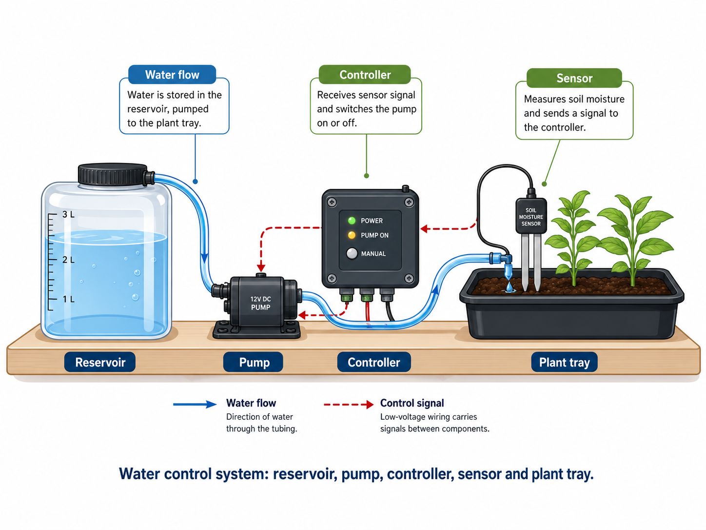

Garden Watering System Project Instructions
Project brief
Design, build and test a small automated watering system that responds to garden conditions and waters a plant bed safely and efficiently.
- Input: Use at least one sensor or switch to trigger the system.
- Control: Include a simple control circuit or programmed controller.
- Output: Activate a pump, valve, LED indicator or watering output.
- Safety: Keep water and electrical connections managed and low-risk.
- Evidence: Record design decisions, wiring, tests, faults and improvements.
What good looks like: a clear input-process-output chain, tidy wiring, sensible water management, reliable testing data and honest evaluation of what needs improving.
System requirements
- Show how the system senses or receives a watering condition.
- Explain the input, process and output clearly in your folio.
- Use a planned wiring/circuit layout and a planned water path.
- Test one part at a time before testing the whole system.
- Use data to judge reliability, water use and possible improvements.
Teacher note: This unit builds from the existing Control Systems program content: automatic watering systems, solenoids, moisture/rain sensors, relays, pumps, algorithms and feedback.

Build steps
Sketch 2-3 system ideas
Choose a simple watering layout that is safe, clear and testable.
More tips
- Show reservoir, tubing, outlet and plant/garden area.
- Mark the wet zone and the dry electronics zone.
- Try different input options: switch, timer, moisture sensor or rain sensor.
Quick check: Can you point to the input, process and output?
Draw your final design with labels
Show component positions, wiring path, water path and teacher check point.
More tips
- Label power source, controller, sensor/input and output device.
- Show where tubing is fixed and where water exits.
- Include rough spacing so another student could follow it.
Quick check: Could someone else build it from your drawing?
Plan components and test order
List parts and decide what you will test before connecting the full system.
More tips
- Write a component list with quantity and purpose.
- Plan output test, input test, then whole-system test.
- Prepare a test table before the first powered test.
Quick check: Do you know what data you will record?
Build the water path first
Set up the reservoir, tubing and outlet before connecting electronics.
More tips
- Test for leaks with power disconnected.
- Secure tubing so it does not kink or pull loose.
- Keep the outlet aimed at the plant area, not the bench.
Quick check: Can water move without reaching the dry zone?
Connect and check the control system
Wire the input, controller and output, then get a teacher check before power.
More tips
- Keep exposed joins away from the wet zone.
- Label wires or use consistent colours where possible.
- Check polarity, loose connections and switch positions before testing.
Quick check: Has the teacher checked the circuit before power is connected?
Test, record and improve
Run repeated tests, record faults, then improve one thing at a time.
More tips
- Record trigger condition, response time, water delivered and result.
- Use a fault log: problem, likely cause, fix, retest result.
- Use control-system words: input, process, output, feedback and reliability.
Quick check: Did you write down results as you went?
Quick checks
- Can you identify the input, process, output and feedback?
- Are wet and dry zones clearly separated?
- Has the circuit been teacher-checked before powered testing?
- Have you captured photos, test data and fault notes for your folio?

YouTube clips
Watch the curated Term 1 video clips for this project.
Term 1 Assessment Task: Garden Watering System
Students complete a control systems project folio and working prototype. Final weighting, issue date and submission date are teacher-confirmed.
Task Overview
Investigate a garden watering problem, design a control system, build a working prototype, test reliability, and document the process in a project folio.
- Identify the watering problem and user needs
- Develop a control-system design using input, process and output thinking
- Build and test the prototype safely
- Record faults, modifications and final performance
- Evaluate water use, reliability, sustainability and improvements
Google Classroom Topics (Term 1)
How to use these topics: Each topic supports one stage of the project. Add Google Classroom links when the class topics are created.
- Orientation: Garden Watering System overview and project expectations
- Topic 1 - WHS & Control Systems Safety: Low-voltage electronics, water management, tool setup
- Topic 2 - Inputs, Outputs & Feedback: Moisture/rain sensors, switches, solenoids, pumps, indicators and relays
- Topic 3 - Algorithms & Control Logic: Thresholds, flowcharts, pseudocode and watering decisions
- Topic 4 - Design & Planning: Irrigation layout, circuit planning, materials, tools and build sequence
- Topic 5 - Build, Test & Evaluate: Prototype testing, fault-finding, reliability data and folio evidence
Scope & Lesson Plans
Overview of Requirements
Throughout Term 1, students develop control-system thinking through a practical garden watering prototype. The unit moves from safe workshop practice, to control theory, to design planning, to prototype testing and evaluation.
- Safety First: Manage low-voltage electronics, water, soldering/drilling tasks, pump/valve setup and safe testing procedures.
- Control Systems Concepts: Understand input, process, output, feedback, sensor thresholds, actuators and reliability.
- Algorithms & Logic: Use a flowchart or pseudocode to explain how the system decides when to water.
- Design & Planning: Analyse the design brief, sketch options, plan circuit layout, plan water flow, select materials and sequence the build.
- Build, Test & Evaluate: Assemble the prototype, test subsystems, record data, diagnose faults and improve performance.
- Project Documentation: Maintain a folio with design rationale, diagrams, build log, test data, fault log, evaluation and sustainability reflection.
Outcomes Alignment (IND5)
This unit aligns with the existing Industrial Technology Engineering outcomes through WHS, design, production, communication, collaboration, testing and evaluation.
- IND5-1: Identify and manage WHS risks when using tools, low-voltage components, water systems and testing procedures.
- IND5-2: Apply design principles to develop and modify a functional garden watering system.
- IND5-3: Select and use tools, equipment and processes to produce a working model or prototype.
- IND5-4: Select and justify materials and components including tubing, reservoir, pump/valve, wiring, sensors and structure/base materials.
- IND5-5: Communicate ideas through sketches, wiring diagrams, flowcharts, folio notes and testing data.
- IND5-6, IND5-7: Work collaboratively, follow a planned build sequence and transfer skills across electronics, mechanisms and control systems.
- IND5-8, IND5-9, IND5-10: Evaluate function, reliability, cost, water efficiency, sustainability and the broader use of automated control systems.
Post-2027 Outcomes Alignment (EGT5)
This project also fits the post-2027 Engineering Technology structure by asking students to design, construct, test, troubleshoot and evaluate a functioning control system.
- EGT5-SAF-01: Apply risk management and safe work practices during electronics, water testing and practical construction.
- EGT5-ENV-01: Analyse water use, energy use, component choice, waste and sustainability in irrigation design.
- EGT5-COM-01: Communicate the engineering solution through folio writing, diagrams, tables and evaluation.
- EGT5-GRP-01: Develop technical graphics including system block diagrams, wiring diagrams and irrigation layout drawings.
- EGT5-EVL-01: Investigate and evaluate prototype performance through structured tests and troubleshooting records.
- EGT5-MEA-01: Analyse practical system behaviour such as pump flow, valve action, water delivery and control response.
- EGT5-USE-01: Select and apply materials and components suitable for a working garden watering prototype.
- EGT5-IVT-01: Connect classroom control systems to smart irrigation, agriculture, automation and internet-of-things applications.
Assessment & Folio Checklist
- Safety Documentation: Risk controls for electronics, water, tools, pumps/valves and testing.
- Project Report: Design brief, user needs, research, sketches, diagrams, material/component selection and build sequence.
- Technical Documentation: Input-process-output diagram, wiring/circuit plan, algorithm/flowchart and irrigation layout.
- Testing Evidence: Test method, data table, observations, response time, water delivery, fault log and modifications.
- Evaluation: Reliability, water efficiency, safety, sustainability, cost, construction quality and improvements.
- Certification Evidence: OnGuard/WHS evidence where required.
Hands-on & Theory (Term 1 Program)
- Weeks 1-2: WHS, control systems overview, irrigation problem and project brief.
- Weeks 3-4: Inputs, outputs, sensors, switches, relays, pump/valve options, algorithms and circuit planning.
- Weeks 5-7: Prototype build, wiring, water path setup, safe subsystem testing and fault-finding.
- Weeks 8-10: Reliability testing, modifications, folio completion, final evaluation and industry/sustainability links.
Resources & Differentiation
- Workshop access: low-voltage electronics, moisture/rain sensor options, switches, relays, pump/valve options, tubing, reservoirs, hand tools and test equipment.
- Scaffolds: input-process-output diagram, algorithm flowchart, wiring checklist, test data table, fault log and evaluation prompts.
- Differentiation: labelled diagrams, vocabulary list with images, partially completed schematics, teacher-approved simplified circuit and extension testing.
- Extension: compare manual watering, timed watering and sensor-triggered watering for water efficiency and reliability.
- Garden Watering System Info Sheets - printable visual guides and student recording sheets.
Week Plan Snapshot (Guide)
This timeline provides the working sequence for building the Garden Watering System unit. Adjust dates and assessment timing to match the school calendar.
- Week 1: Unit introduction, WHS, control systems in everyday life, project brief and garden watering problem.
- Week 2: Inputs, process, outputs, feedback, safe low-voltage systems and water/electricity risk controls.
- Week 3: Sensors and actuators: moisture/rain sensors, switches, solenoids, pumps, indicators and relays.
- Week 4: Algorithms and design planning: flowchart/pseudocode, system block diagram, irrigation layout and materials list.
- Week 5: Build base/reservoir/water path and test output device separately.
- Week 6: Build and test input/control circuit; connect sensor or switch to output device.
- Week 7: Integrate the full system; diagnose leaks, wiring faults, unreliable triggering or poor water delivery.
- Week 8: Reliability testing: repeated test cycles, response time, water delivered and fault log.
- Week 9: Controlled improvements, sustainability reflection, cost/material review and final performance test.
- Week 10: Folio completion, project evaluation, submission and class reflection.